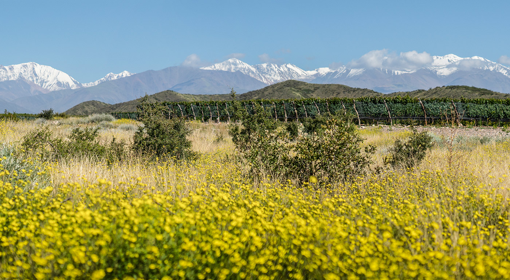
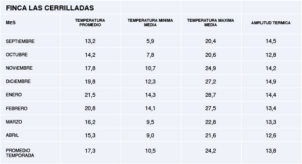
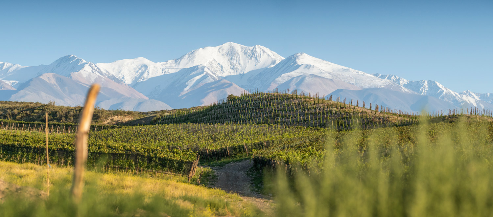
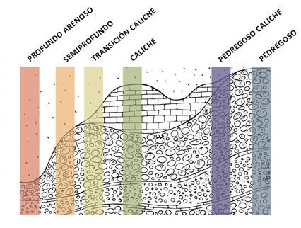
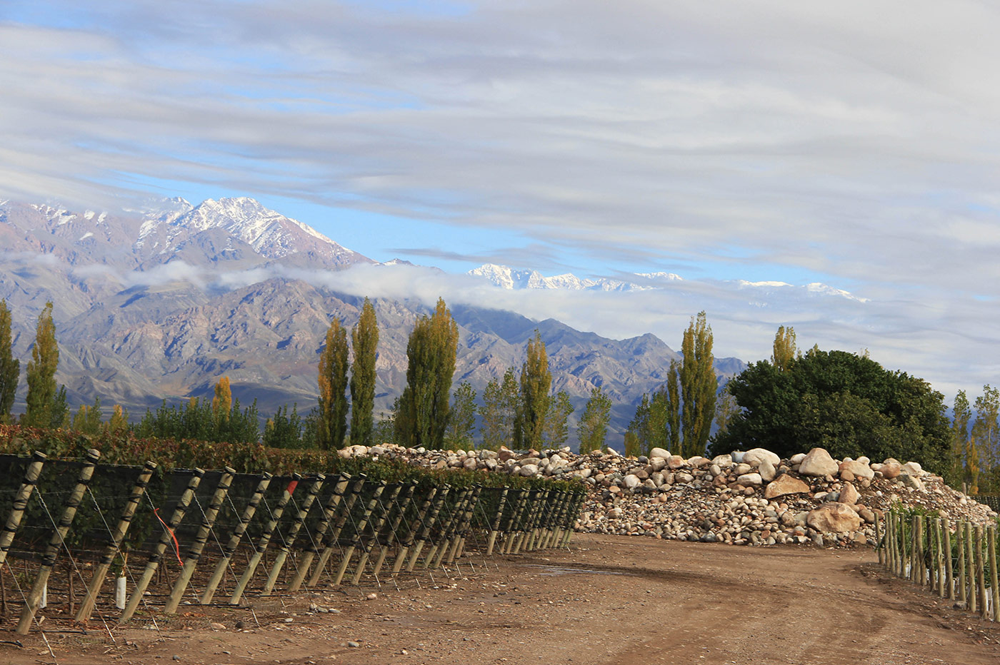
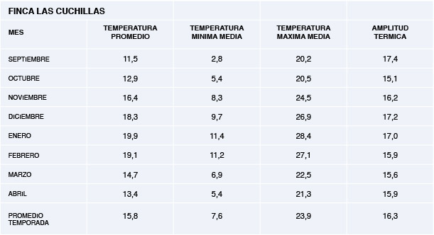

Ubicada al pie de las Lomas del Jaboncillo, únicas cerrilladas elevadas dentro del
Valle de Uco. Este viñedo expresa la diversidad y riqueza del terruño de
Gualtallary. El diseño de cada una de sus parcelas es el resultado de años de trabajo de
interpretación del viñedo, y de la investigación y desarrollo de nuestro equipo. En sus
suelos aluviales del Río Las Tunas encontramos diferentes materiales calcáreos, como gravas
y caliches, que son expresados con transparencia por las vides de Malbec, Cabernet Franc y
Chardonnay.


Esta finca toma su nombre del arroyo que baja de las Lomas del Jaboncillo hacia las Lomas
del Peral y representa el perfecto equilibrio entre paisaje y viñedo. Con sus hileras de vid
integradas entre extensos cañadones de vegetación nativa, y con su rico relieve de quebradas
y cerrillos, cada parcela muestra una identidad única, reflejo de la riqueza de Gualtallary.


Situada sobre el abanico aluvial del Río Las Tunas a tan sólo 600 metros de
las primeras cuchillas del frente montañoso de la Cordillera Frontal, esta finca representa
el auténtico viñedo de montaña. Su altitud y clima extremos imprimen su marca en el
crecimiento del viñedo y constituyen la identidad de sus vinos.
